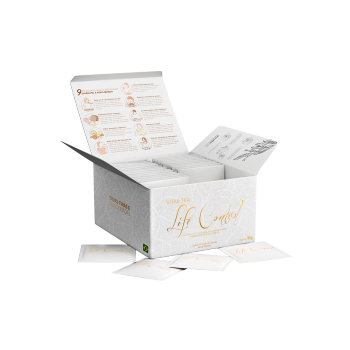

Nossos Produtos
Matcha
Com seu sabor suave e levemente adocicado, ele é ideal para quem busca uma alternativa saudável e energizante para o dia a dia. Além de ajudar a aumentar a energia e a concentração, o Matcha também contribui para a desintoxicação do organismo e promove um metabolismo saudável..
Vitae Shake

Experimente o Vitae Shake Luci Luci, a opção perfeita para quem busca uma refeição prática e nutritiva! Formulado com ingredientes de alta qualidade, nosso shake é rico em proteínas, fibras e vitaminas, proporcionando energia duradoura e auxiliando na recuperação muscular..
Vitae Tea
O Chá Vitae da marca Luci Luci é uma mistura cuidadosamente elaborada de ervas naturais, projetada para promover o bem-estar e a vitalidade. Com ingredientes selecionados, como erva-doce e hibisco, oferece um sabor leve e refrescante, ideal para qualquer hora do dia. Além de ser uma opção saudável e saborosa, o Chá Vitae também contribui para a hidratação e pode auxiliar na digestão, tornando-se uma escolha perfeita para quem busca um estilo de vida equilibrado..
Clinc O3
A Clinic O3 é uma instituição dedicada à saúde e bem-estar, oferecendo uma variedade de serviços e tratamentos que utilizam tecnologia de ponta e abordagens integrativas. Com foco em terapias como ozonioterapia, a clínica visa promover a recuperação e a qualidade de vida dos pacientes..
Fine feminino 15ml
Os perfumes femininos da linha Fine são conhecidos por suas fragrâncias sofisticadas e marcantes. Cada perfume é elaborado com ingredientes de alta qualidade, proporcionando aromas que vão desde florais delicados até notas mais intensas e envolventes.
Fine feminino 100ml

Os perfumes femininos da linha Fine são conhecidos por suas fragrâncias sofisticadas e marcantes. Cada perfume é elaborado com ingredientes de alta qualidade, proporcionando aromas que vão desde florais delicados até notas mais intensas e envolventes.
Sweet Girl
O perfume Sweet Girl é uma fragrância doce e envolvente, perfeita para mulheres que buscam um aroma jovem e vibrante. Com notas frutadas e florais, ele exala uma essência feminina e alegre, ideal para o dia a dia ou ocasiões especiais.
Fine masculino 15ml
Os perfumes masculinos da linha Fine são projetados para transmitir sofisticação e estilo. Com uma combinação de notas amadeiradas, especiarias e toques frescos, cada fragrância é única e marcante. Ideal para o homem moderno, esses perfumes são perfeitos para qualquer ocasião, do dia a dia a eventos mais formais.
Fine masculino 100ml
Os perfumes masculinos da linha Fine são projetados para transmitir sofisticação e estilo. Com uma combinação de notas amadeiradas, especiarias e toques frescos, cada fragrância é única e marcante. Ideal para o homem moderno, esses perfumes são perfeitos para qualquer ocasião, do dia a dia a eventos mais formais.
Soleil Noir
O perfume Soleil Noir é uma fragrância envolvente que evoca a intensidade e a luminosidade do sol. Com uma combinação de notas quentes e exóticas, como flor de laranjeira, âmbar e especiarias, ele oferece uma experiência olfativa rica e marcante.
Base Líquida studio pro
A base líquida é um produto essencial na maquiagem, projetada para uniformizar o tom da pele e criar uma base suave para outros produtos. Disponível em diversas texturas e acabamentos, como matte ou iluminado, ela pode oferecer cobertura leve a completa, atendendo diferentes necessidades e tipos de pele. A formulação geralmente inclui ingredientes que hidratam, controlam a oleosidade e proporcionam proteção solar.
Gel Dental Vitae Black White
O gel dental black é um produto inovador que combina ingredientes ativos para promover uma limpeza eficaz e um sorriso radiante. Com uma fórmula enriquecida com carvão ativado, ele ajuda a remover manchas e impurezas, proporcionando um efeito branqueador natural.
Fone Bluetooth
Com design moderno e ergonômico, eles oferecem um encaixe perfeito, ideal para longas sessões de uso. Além disso, muitos modelos contam com recursos como cancelamento de ruído, resistência à água e microfone integrado para chamadas. A durabilidade da bateria garante horas de reprodução, tornando-os perfeitos para quem busca praticidade e estilo no dia a dia.